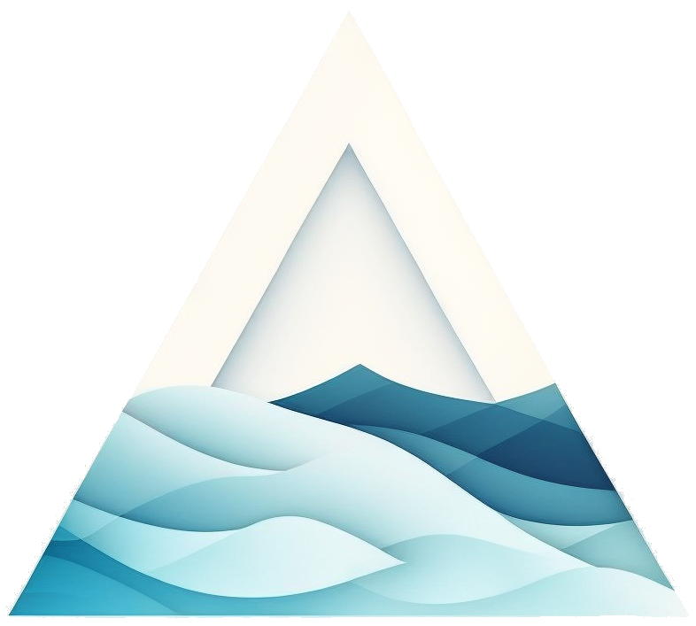

FIAKO-HIDROKIT
Technology for Water Resources Engineering by FIAKO Engineering & fiakodev
fiako-hidrokit merupakan kumpulan proyek penelitian dan pengembangan teknologi di bidang teknik sumber daya yang diawali oleh taruma yang kemudian dikembangkan lebih lanjut oleh FIAKO Engineering dan fiakodev.
HIDROKIT-PROJECTS
- hidrokit | Python Package |
 |
| |
 |
|  |
| 
- Paket python yang dapat digunakan untuk membantu proses analisis hidrologi dimulai dari pengolahan data, analisis data, dan visualisasi data. Fiturnya antara lain pemodelan NRECA dan FJMock, rekap/ringkasan data hujan harian, debit andal, analisis frekuensi.
////
APLIKASI PENGOLAHAN DATA HUJAN [fiako-stations, hidrokit-rainfall, fiako-anfrek]
pengembangan tiga aplikasi web untuk membantu pekerjaan pengolahan data hujan hingga analisis frekuensi
- fiako-stations | Web Application |
 |
|  |
|  |
| - Aplikasi web untuk mengeksplorasi pos hujan dengan data hujan harian yang tersedia di database. Dengan aplikasi ini dapat memperoleh informasi kelengkapan data dan akuisisi data hujan harian dengan mudah dan cepat.
- hidrokit-rainfall | Web Application |
 |
|  |
|  |
| - Aplikasi web untuk menganalisis data hujan harian. Dari aplikasi ini dapat memperoleh informasi hujan maksimum, hari hujan, hari kering, kejadian hujan maksimum setiap periode, kumulatif tahunan, dan konsistensi (kurva massa ganda).
- fiako-anfrek | Web Application |
 |
|  |
|  |
| - Aplikasi web untuk menghitung parameter statistik, jenis sebarannya (distribusi), analisis frekuensi, dan uji kecocokan distribusi. Output aplikasi ini berupa visualisasi hasil perhitungan dan tabel/teks berupa .csv/.txt.
////
LAPORAN IMPLEMENTASI
Jupyter Notebook yang mendemonstrasikan/mengimplementasikan python pada bidang teknik sumber daya air menggunakan hidrokit
- LI-01 | Single-Output Regression Neural Network pada kasus Prediksi Kualitas Air
-
(13 Juli 2019) | Machine Learning |
- LI-02 | Prediksi Debit Aliran Menggunakan Long Short-Term Memory (LSTM)
-
(22 Oktober 2019) | Machine Learning |
- LI-03 | Analisis Hidrologi menggunakan hidrokit
-
(16 Januari 2020) | Python |
- LI-04 | Perbandingan Model Variasi Recurrent Neural Networks pada Kasus Prediksi Debit Aliran
-
(11 Februari 2020) | Machine Learning |
- LI-05 | Analisis Frekuensi dan Uji Kecocokan Distribusi
-
(05 April 2022) | Machine Learning |
////